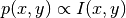
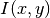

Distancing module¶
This module contains functions that act on the output images of the trained CNN to carry out centriole distancing.
-
distancing.associate_peaks2centre_single(cnn_peaks, cnn_centre, dist_thresh=10, ratio_thresh=3)[source]¶ Uses separation centre in order to return the 1 or 2 most likely centriole positions in the local patch.
Parameters: - cnn_peaks : numpy array or list
array of (y,x) coordinates of potential centriole centroids.
- cnn_centre : 2-tuple
the coordinate of the separation centre of the centroid pair.
- dist_thresh : float
two peaks separated by a distance > dist_thresh is unlikely to be mother-daughter centriole pairs. units are pixels
- ratio_thresh : float
ratio of less intense over more intense centriole in a pair, < ratio_thresh, the pair is designated not similar in pixel intensity and only the brighter centriole is returned.
Returns: - cnn_peaks_filt : numpy array
(y,x) coordinates of the individual detected centriole centroids.
-
distancing.detect_2d_peaks(img, I_img, min_distance=1, filt=True, thresh=None)[source]¶ Identify the centroids in the CNN predicted output images and return detected positions and intensity statistics.
Parameters: - img : numpy array
the CNN output probability image
- I_img : numpy array
the raw gray-image
- min_distance : float
minimum separation distance between centroids in number of pixels.
- filt : bool
if True, consider only peaks in the CNN output that have intensity >= thresh. If False, we use a small fixed threshold of 1e-6.
- thresh : None or float
if float, a constant threshold is used else Otsu thresholding is use to automatically set an intensity threshold.
Returns: - n_peaks_raw : int
Number of peaks detected without applying any intensity threshold.
- filt_peaks : array-like
result array of (y,x,I) tuple of (y,x) centroid locations and associated raw pixel intensity at (y,x). If no peak is detected an empty list [] is returned.
-
distancing.detect_2d_peaks_stack(img_stack, I_img_stack, min_distance=1, filt=True, thresh=None)[source]¶ Wrapper for
detect_2d_peaks()extending it to work on a stack of input images.Parameters: - img_stack : numpy array
array of the CNN output probability images
- I_img_stack : numpy array
array of raw gray-images
- min_distance : float
minimum separation distance between centroids in number of pixels.
- filt : bool
if True, consider only peaks in the CNN output that have intensity >= thresh. If False, we use a small fixed threshold of 1e-6.
- thresh : None or float
if float, a constant threshold is used else Otsu thresholding is use to automatically set an intensity threshold.
Returns: - all_n_peaks_raw : int
Number of peaks detected without applying any intensity threshold.
- all_filt_peaks : array-like
result array of (y,x,I) tuple of (y,x) centroid locations and associated raw pixel intensity at (y,x). If no peak is detected an empty list [] is returned.
-
distancing.fitGMM_patch_post_process(centre_patch_intensity, n_samples=1000, max_dist_thresh=10, min_area_pair=0, max_area_pair=10000)[source]¶ Fits an n-component mixture to a 2d image to resolve closely overlapping centroids
This function simplifies the calling and wraps fit_2dGMM so we directly give the input image.
Parameters: - centre_patch_intensity : numpy array
input gray-image
- n_samples : int
the maximum number of samples to draw if the corresponding normalised image intensity was 1.
- max_dist_thresh : int
the upper bound on the expected distance if it was a true pair.
Returns: - filt_peaks : 3-tuple
returns the resolved centriole peak positions for distancing.
-
distancing.fit_2dGMM(samples_x, samples_y, n_components=2)[source]¶ Fit an n-component mixture to the 2d image to resolve closely overlapping centroids given (x,y) image coordinate samples
samples_x and samples_y should be of same array length.
Parameters: - samples_x : numpy array
array of x-coordinates.
- samples_y : numpy array
array of y-coordinates.
- n_components : int
the number of Gaussian mixture components to fit, default is 2 to resolve the centriole pair.
Returns: - gmm_params : 3-tuple
Returns the fitted parameters in the mixture namely (weights, means, covariance matrices)
- prob_samples : numpy array
- posterior probability of each sample belonging to each component.
input shape : (n_samples, 2) output shape : (n_samples, n_components)
- gmm : Scikit-learn GMM model instance
fitted Scikit-learn GMM model.
-
distancing.img2histogram_samples(img, thresh=0.1, samples=20)[source]¶ Efficient sampling of the (x,y) image coordinate pairs proportional to the corresponding pixel intensity.
Parameters: - img : numpy array
(n_rows x n_cols) gray-image
- thresh : float
minimum threshold below which we set all intensity to 0 to avoid sampling very low intensities.
- samples : int
the maximum number of times, a position (x,y) is sampled if I(x,y) = 1 that is maximum intensity
Returns: - xy_samples : numpy array
array of (x,y) coordinates whose distribution,  where  is the corresponding (normalised) pixel intensity at (x,y).
-
distancing.predict_centrioles_CNN_GMM(imstack, cnnstack, min_distance=1, filt=True, p_thresh=None, dist_thresh=15, ratio_thresh=4, nsamples_GMM=1000, max_dist_thresh_GMM=10)[source]¶ Wrapper function to take the input image stack and the predicted CNN output image stack and return distances.
Parameters: - imstack : numpy array
array of input images for distancing.
- cnnstack : numpy array
array of CNN output probability images.
- min_distance : float
minimum separation distance between detected centroids in number of pixels.
- filt : bool
if True, consider only peaks in the CNN output that have intensity >= p_thresh. If False, we use a small fixed threshold of 1e-6.
- p_thresh : None or float
minimum intensity threshold to filter detected peaks in CNN output. If None uses a threshold derived from Otsu’s thresholding
- dist_thresh : None or float
the upper bound on the expected distance if it was a true pair.
- ratio_thresh : float
ratio of more intense over less intense centriole in a pair, > ratio_thresh, the pair is designated not similar in pixel intensity and only the brighter centriole is returned.
- nsamples_GMM :
- max_dist_thresh_GMM :
Returns: - distances : array
list of [(y,x), d] list of detected (y,x) centroids and distance between the detected positions for each image. Returns empty array [] if no peaks are present.